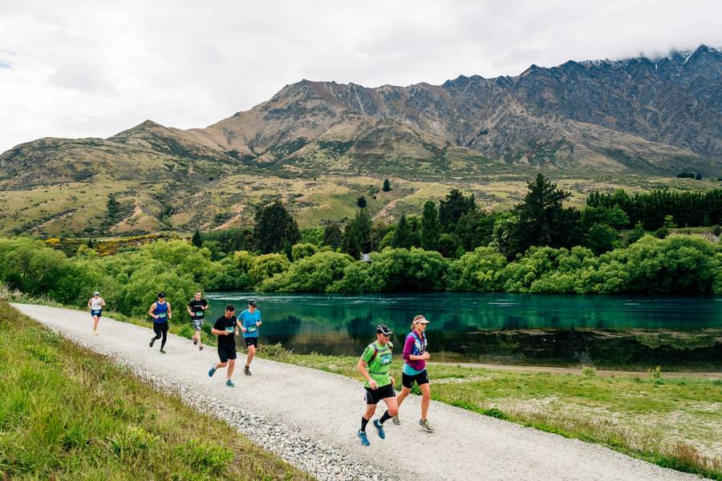
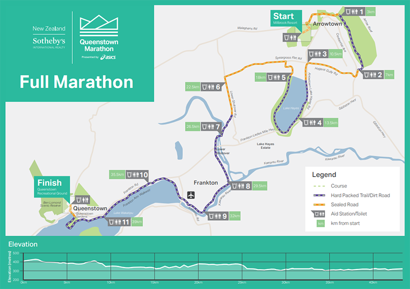
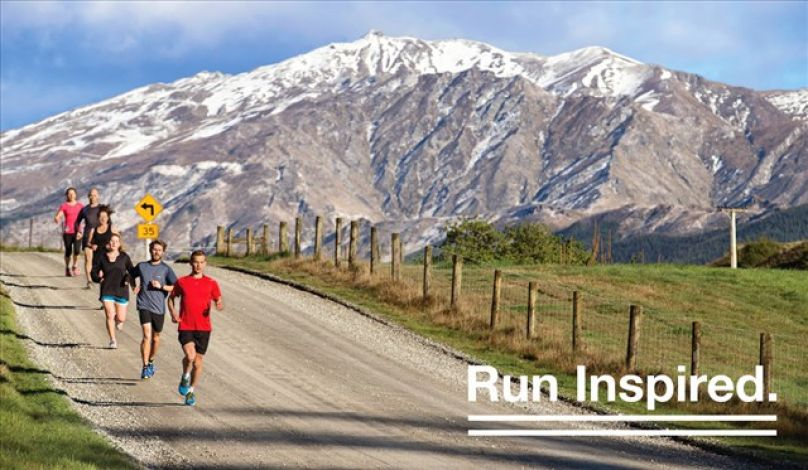

🏔️ 賽事名片與封面
紐西蘭皇后鎮馬拉松 (Queenstown Marathon)
世界上最美麗的馬拉松，穿梭於高山湖泊與卓越山脈的南半球純淨跑旅
🏃 賽事基本定位
南島名賽
- 全球美譽：被國際公認為「世界上最美麗的馬拉松」，紐西蘭南島指標路跑
- 權威認證：AIMS 認證點對點賽道，成績獲波士頓馬拉松（BQ）資格賽採計
- 參賽規模：總人數逾 13,000 人（全馬約 4,000 人），海外國際跑者達 38%
- 地理環境：紐西蘭南島中央奧塔哥皇后鎮湖區，環抱瓦卡蒂普湖與卓越山脈
- 賽道地貌：約 70% 平整硬質碎石步道與自行車道，30% 為平整柏油公路
AIMS/BQ 認證
70% 碎石步道
國際跑者 38%
AIMS 與 BQ 雙認證 ｜ 世界上最美麗的高山湖泊賽道
🌍 跑旅核心精神
純淨荒野
- 純淨絕景：穿梭魔戒取景地壯麗山谷、金礦小鎮箭鎮與藍寶石般的海耶斯湖
- 淨下坡特質：起點 410m 降至終點 319m（淨下降約 91m），暗藏坡度起伏考驗
- 嘉年華終點：終點設於皇后鎮休閒公園，草地音樂會、餐車與精釀啤酒同歡
- 包容親民：全馬關門限時長達 7 小時 45 分，步進行者（Walkers）亦受熱烈歡迎
湖光山色盡收眼底 ｜ 考驗配速智慧與下坡控腿技巧的純淨饗宴

🏔️
瓦卡蒂普湖與卓越山脈
圖片路徑：images/queenstown_01.jpg
圖 1：海耶斯湖與卓越山脈 ｜ 跑者奔馳於南半球純淨如鏡的高山湖畔
📋 賽事基本資訊
競賽規程與規格矩陣
每年 11 月中旬開跑，點對點淨下降賽道與 7 小時 45 分寬裕限時
⏱️ 舉辦時程與組別
超長關門
- 舉辦時間：每年 11 月中旬星期六（例如 2026 年 11 月 14 日）
- 全程馬拉松：08:45 AM 起跑，起點米爾布魯克渡假村（Millbrook）
- 半程馬拉松：08:00 AM 起跑，起點瓦卡蒂普盆地（最熱門組別）
- 短程組別：10K 路跑（07:30 AM）、兒童跑 2.2K（01:00 PM）
- 關門時限：終點於下午 04:30 關門，全馬限時長達 7 小時 45 分
全馬限時 7h45m
四大參賽組別
⛰️ 垂直爬升與海拔
淨下降賽道
- 起終點海拔：起點 410 公尺、終點 319 公尺，全線淨下降約 91 公尺
- 累積爬升：總爬升約在 120 至 350 公尺之間，集中於前半程 24 公里
- 後半程平坦：26 km 至終點高度差僅 13 公尺，沿湖畔平穩前行
- 淨下坡陷阱：前段連續下降對股四頭肌造成離心衝擊，切忌過早暴衝
- 關鍵爬坡：18~21 km Slope Hill 面臨全程最長 45m 陡坡，須控速爬升
淨降 91m
集中前半程爬升
🌲 賽道地貌與補給
70% 碎石路
- 步道地質：70% 為平整硬質碎石步道，標準公路跑鞋即可舒適駕馭
- 景觀串聯：米爾布魯克大道、箭鎮街區、箭河步道、海耶斯湖、沙特歐瓦河
- 水站配置：全馬設 11 座補給站（約每 4 km 一座），供應純水與電解質
- 特色飲品：31 km 設 Red Bull 站，後段第 8~11 站提供去氣可樂補糖
- 人車管制：步道與公路實施分流封閉管制，志工於關鍵路口全程引導
11 座水站
去氣可樂補給
🏆 競賽規範與認證
BQ 資格採計
- 國際認可：AIMS 賽道認證，成績可作為波士頓馬拉松（BQ）資格證明
- 晶片計時：號碼布背貼式單次感應晶片，採 Mat-to-Mat 淨時間計時
- 官方獎金：男女性總排名前三名頒發槍響時間獎金（第一名 NZ$3,000）
- 載具限制：嚴禁使用輪椅、推車、直排輪、自行車或攜帶寵物參賽
- 健走友好：全馬與半馬歡迎步進行者（Walkers），起跑排於後方分區
BQ 認可賽事
步進選手友好
⚡ 賽道結構與魔王路段
Slope Hill 陡升與沙特歐瓦河碎石急降
突破 18 至 21 公里關鍵爬坡，應對 24 公里陡峭下坡的股四頭肌考驗
🗺️ 賽道分段結構剖析
全馬 42.2 km
- 渡假村至箭鎮（0~8 km）：綠蔭大道出發穿過歷史金礦小鎮，沿箭河平緩下坡
- 海耶斯湖環湖（9~17 km）：下衝 38 公尺進入湖區，順時針飽覽雪山倒影
- Slope Hill 陡坡（18~21 km）：面臨全程最長且持續爬升，陡升約 45 公尺
- 沙特歐瓦河急降（24~26 km）：由碎石步道急降 55 公尺直衝河谷，穿越老鐵橋
- 湖畔平坦最後衝刺（26~42.2 km）：沿雙河與 Frankton 步道平緩前行衝進皇后鎮公園
穿梭金礦小鎮與雪山湖泊 ｜ 宛如置身魔戒中土世界的夢幻風景
🛑 魔王路段：Slope Hill 與淨下坡陷阱
肌肉衝擊
- 關鍵爬坡（18~21 km）：Slope Hill 連續陡升，務必依體感心率放緩配速，切忌硬拉
- 離心衝擊急降（24~26 km）：碎石路面急降 55 公尺，股四頭肌承受強烈離心負荷
- 淨下坡體能崩盤點：許多跑者前段過快衝刺，在 30~35 km（Frankton 區間）面臨撞牆
- 檢查點關門時限：Lake Hayes（11 km / 11:10）、Spence Rd（26.3 km / 13:45）、Frankton（32 km / 14:40）
控速下坡防肌纖維撕裂 ｜ Slope Hill 主動降速保留體能給最後 16km

🏃
湖畔步道與 Slope Hill 賽道
圖片路徑：images/queenstown_02.png
圖 2：湖畔硬質碎石步道 ｜ 跑者穿梭於瓦卡蒂普湖畔與金黃柳樹林蔭間
🎟️ 報名資格與搶票攻略
預約梯次報名與組別轉換機制
每年春季開放線上註冊，額滿預警與點對點接駁車票加購
🌐 官方線上報名流程
線上註冊
- 報名平台：透過皇后鎮馬拉松官方網站註冊（Active 系統）
- 額滿預警：半馬與全馬熱門組別通常於賽前數月即全數額滿
- 報名費用：全馬 NZ$277、半馬 NZ$204、10K NZ$136、兒童跑 NZ$58
- 組別轉換：可在官方截止日前線上申請轉組（如全馬轉半馬）補退差額
- 年齡規範：全馬須滿 18 歲，半馬須滿 16 歲，10K 須滿 10 歲
全馬 NZ$277
支援線上轉組
🚌 官方起點接駁車加購
點對點必備
- 接駁必要性：起終點不同且起點無公眾停車位，強烈建議加購車票
- 全馬接駁車：票價 NZ$20，清晨 07:00~07:35 於市區 Boundary St 發車
- Frankton 點：亦可在 Frankton Wakatipu 高中登車（07:20~07:30）
- 購票管道：報名時勾選或賽前登入帳戶加購，領物時領取乘車標籤
- 乘車驗證：憑號碼布上的 Shuttles 圖示或專屬貼紙登車直達起點
接駁票 NZ$20
直達起點渡假村
📝 Expo 博覽會報到
賽前領取
- 領物地點：皇后鎮賽事中心（Queenstown Events Centre，近機場）
- 開放時間：週四 12:00~19:00、週五 10:00~20:00，比賽當天不開放
- 必備文件：攜帶含照片證件（護照）與確認信 Email（QR Code）
- 物資內容：號碼布（背貼晶片）、官方專用寄物袋與賽事手冊
- 公車直達：搭乘 Orbus 1 號公車（持 Bee Card 僅 NZ$2.50）直達展覽館
賽前兩天領物
Events Centre
📦 官方寄物袋託運規範
衣物托運
- 專用寄物袋：僅限使用官方抽繩寄物袋並貼標籤，拒收個人大背包
- 起點托運：起點設有衣物托運卡車，開賽前 20 分鐘停止收件
- 終點領取：寄物袋運送至皇后鎮紀念中心（Memorial Centre）領取
- 開放時間：全馬專區於上午 11:00 開放，須於下午 04:30 前領畢
- 舊衣回收：起跑前可穿著舊外套防風禦寒，起跑丟棄衣物統一捐贈
專用抽繩袋
紀念中心領取
🚗 交通住宿與領物寄物
皇后鎮住宿分佈、公車路網與終點物流
皇后鎮市中心與 Frankton 住宿比較，Orbus 公車卡與賽後步行動線
🏨 皇后鎮住宿區域權衡
住宿規劃
- 市中心（CBD）：步行可達終點與接駁車發車點，賽後回房最輕鬆，房價較高
- Frankton 湖區：鄰近機場與 Expo 會場，房價較平易，有高中接駁乘車點
- 提前預訂預警：賽事週全鎮湧入萬名跑者，建議提前 6 至 9 個月預訂住宿
- 公寓房型首選：推薦預訂含廚房的公寓飯店（Apartment），便於賽前自煮肝醣
- 水上渡輪：可搭乘 Queenstown Ferry 往返 Hilton、Frankton 與市中心碼頭
市中心步行即可抵達終點 ｜ 建議提前半年預訂住宿
🚌 在地交通：Orbus 與 Bee Card
廉價便利
- 公車網絡：Orbus 公車系統串聯機場、市中心、Frankton 與 Expo 會場
- Bee Card 票卡：機場或便利店購買 Bee Card，刷卡單趟僅需 NZ$2.50
- 機場接駁：搭乘 1 號公車每 15 分鐘一班，約 20 分鐘直達皇后鎮市中心
- 賽後渡輪：搭乘 Queenstown Ferry 穿梭瓦卡蒂普湖，放鬆欣賞湖光倒影
- 右駕自駕提醒：紐西蘭為右駕左行，比賽當日多處封路，市區車位極短缺
必備 Bee Card 交通卡 ｜ Orbus 串聯機場、展覽館與市區
🏟️ 終點嘉年華與退場物流
湖畔慶祝
- 終點動線：衝過休閒公園終點線，領取完賽獎牌、電解質、新鮮蘋果與保暖鋁箔
- 寄物領取：步行 3 分鐘至皇后鎮紀念中心（Memorial Centre）憑號碼布領包
- 草地派對：公園大草坪設有現場樂隊演出、餐車市集、精釀啤酒與按摩帳篷
- 天然冷療：許多跑者漫步至瓦卡蒂普湖進行冰冷湖水浸泡，促進血液循環
- 悠閒返宿：市中心住宿跑者可慢步返回飯店，免除長途轉乘舟車勞頓
終點草坪音樂嘉年華 ｜ 瓦卡蒂普湖天然冰水冷療放鬆
🎒 跑步裝備、補給與氣候應變
碎石混合跑鞋、春末溫差與下坡離心對策
應對早晨 4°C 至午後 18°C 溫差，高吸濕防沙跑襪與定時咖啡因補給
⛅ 11 月春末氣候與溫差
溫差 14°C
- 劇烈溫差：清晨起跑時約 4°C~8°C（偶有霜凍），午後陽光直射可升至 18°C
- 陣風與乾爽：11 月為陣風較大月份，空氣清爽乾燥，體感舒適但水分蒸發快
- 高係數防曬：南半球紫外線極強，必備 SPF 50+ 防水防曬乳與抗 UV 太陽眼鏡
- 洋蔥式穿搭：起跑前穿著拋棄式舊外套保暖，起跑後投入回收箱，短袖配袖套為佳
- 定時補水：乾燥環境汗水蒸發迅速，即使不覺口渴亦須每站小口定時補水
清晨霜凍午後微熱 ｜ 必備 SPF 50+ 防曬與起跑禦寒層
👟 跑鞋挑選與防磨配置
公路跑鞋
- 跑鞋推薦：70% 為平整硬質碎石路，標準公路跑鞋或輕量競速鞋即可完美勝任
- 無須重裝越野：步道平整度高，深齒痕越野跑鞋反而增加不必要的重量與負擔
- 防磨細密跑襪：碎石步道偶有細微碎沙微粒，穿著高筒排汗防磨跑襪以防起泡
- 股四頭抗衝擊：賽前加入下坡控速離心訓練，穿戴壓縮腿套減緩下坡肌肉震顫
- 防磨膏塗抹：大腿內側、腋下與腳趾塗抹防磨膏，應對長時間乾燥摩擦
標準公路鞋即可勝任 ｜ 穿著高防磨跑襪與壓縮腿套
🍌 賽道補給與自備策略
去氣可樂
- 官方水站：全馬設 11 座水站（約每 4 km 一座），供應純水與 PURE 檸檬電解質
- 特色能量站：31 km 設 Red Bull 站；後段 8~11 站提供去氣可樂快速補糖
- 自備能量膠：建議隨身自備 5~6 包習慣品牌能量膠，每 35~40 分鐘固定補給
- 鹽錠電解質：空氣乾燥易忽視排汗量，每小時搭配補水補充一顆電解質鹽錠
- 30 km 臨界點：進入 Frankton 湖畔平緩區前補足糖分，維持平穩巡航步頻
後段去氣可樂快速提神 ｜ 自備能量膠每 40 分鐘補給
🗺️ 賽後觀光與跳轉導航
冒險之都極限體驗與最終站富士山
纜車登頂眺望卓越山脈、米佛峽灣巡禮與 12 場賽事完結篇
🌟 皇后鎮冒險與自然巡禮
冒險之都
- 天際線纜車（Skyline）：搭乘纜車登鮑伯峰（Bob's Peak），俯瞰 220 度高山湖景
- 百年蒸氣船巡航：搭乘 TSS 厄恩斯勞號穿梭瓦卡蒂普湖，造訪高地牧場農莊
- 米佛峽灣（Milford Sound）：世界第八大自然奇景，賽後搭乘觀光巴士深入冰河峽灣
- 箭鎮淘金小鎮漫步：賽後悠閒重訪箭鎮，在歷史林蔭街區享用紐西蘭肉派與咖啡
鮑伯峰 220 度湖景 ｜ 乘百年蒸氣船巡航純淨南半球淨土
🧭 賽事跳轉導航
最終站導航
- 下一站賽事：[[日本富士山]]（富士山馬拉松，富士五湖楓紅與聖山倒影最終完結篇）
- 賽事主題：世界遺產與自然荒野賽道之壓軸最終站
- 總索引回訪：隨時返回首頁索引查看 12 場賽事矩陣與知識圖譜

🏅
皇后鎮馬拉松完賽獎牌
圖片路徑：images/queenstown_03.jpg
圖 3：純淨雪山完賽獎牌 ｜ 刻劃卓越山脈輪廓的南島最美馬拉松榮耀